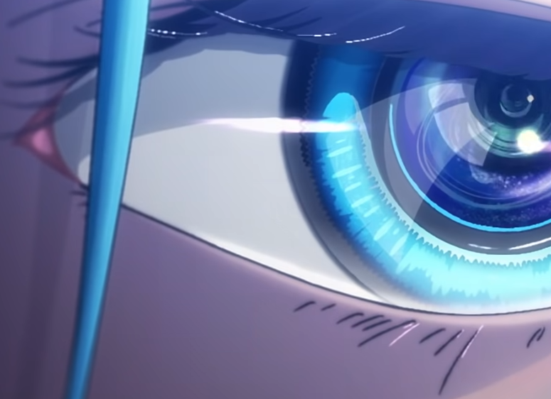
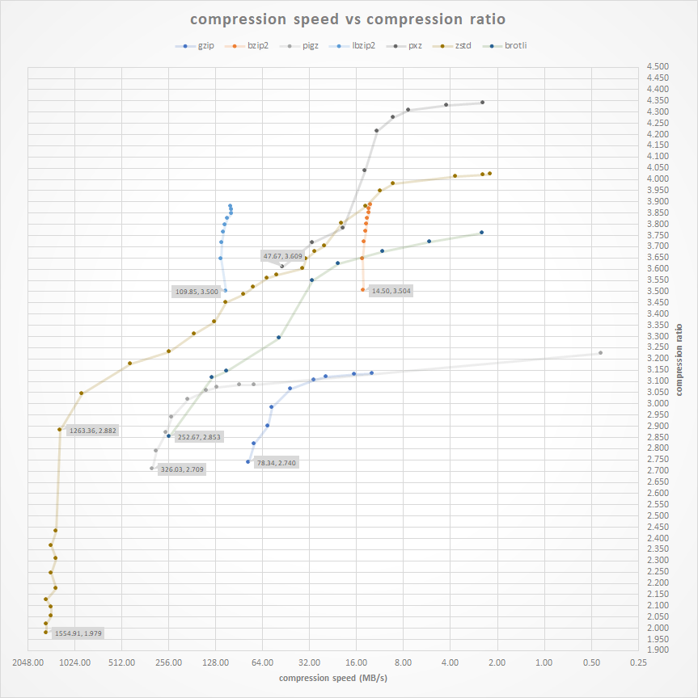

Updated: Sep 27, 2021
Recently, I started running out of storage space. Most of the time, this isn’t a problem, as I can just delete big files I don’t need. But this time, the entire drive is precious, and I can’t just buy a new one, at least right now.
And that led me to a sinkhole of compression. Turns out zip’s, rar’s, jpegs, and .mp4’s are far from being the best at anything…
Compression Algorithms
As for compression algorithms, there are a lot, but each made for a specific purpose. I’ll be showing the most modern ones – and consequently the best ones. As well as some niche exotic types.
General Compression
Image Compression
Video Compression
Images
You can compress an image even further than it already is, without losing much, or any quality. Ever heard of WebP? or maybe AIFF? or, uh, JPEG?
WebP
cwebp -q 85 -m 6 image.jpg -o image.webp
Note: The command above does not consider the original image’s “quality”; it wouldn’t make sense to convert a 40 quality JPEG into an 85 quality WebP, but you can use this command to find out.
identify -format '%Q' image.png
You can also check out the official documentation to understand what each command does
JPEG
Does it really need an explanation? OK, JPEG is a commonly used method of lossy compression for digital images. Oh, and you also can’t have transparency. And has compression artifacts so bad you see it in memes.
ffmpeg -i image.png image.jpg
or
mogrify -format jpg image.png
AVIF
AVIF is really new, like REALLY new. it took me 10 minutes just to find the “documentation”, but the results are really impressive. And im not even gonna pretend i know how it works, it’s ~magik
avifenc image.png image.avif
Testing
If you’re wondering, I did not “normalize” any of the base images, nor did I take into account the different settings of different algorithms. The settings I used are listed above, as those, I found to produce the smallest size without sacrificing quality.
VIVY PNG Image
PNG 1.8MB
JPG 105K.1B
WEBP 66.7KB

AVIF 33.7KB

PNG 358.9KB
JPG 32.2KB
WEBP 21.3KB

AVIF 13.1KB
ANDR JPG IMAGE
JPEG 1.9MB
WEBP 151.8KB
AVIF 97.8KB
JPEG 42.6KB
WEBP 5.2KB

AVIF 4.7KB
Music
Generally, music can not be reasonably compressed as most music files are already lossy, meaning they lose some data in the process of compression. The only real option would be to use AAC, at a slighly lower bitrate. But if you like high-quality audio, sadly, there’s no other option.
ffmpeg -i input.mp3 -c:a libfdk_aac output.m4a
ffmpeg -i input.mp3 -c:a libfdk_aac -vbr 4 output.m4a
Video
NOTE: All video compression artifacts will be re-encoded which will hurt compression ratio and quality.
There are a few next gen formats, H.265 h.266 (yes it is real) and AV1 Although due to licensing issues, h.266 isn’t realy implemented in anything, not even ffmpeg (yet), but h.265 and AV1 is!
H.266 Encoding
H.266 outperforms HEVC by about %50, although sadly, there’s no easy way of using it yet. But the encoder/decoder is already available
AV1 Encoding
AV1 produces around %30 better results than H.265
ffmpeg -i input.mp4 -c:v libsvtav1 -b:v 0 av1_test.mkv
H.265 Encoding
ffmpeg -i input.mp4 -c:v libx265 -c:a copy output.mp4
to convert audio too
ffmpeg -i input.mp4 -c:v libx265 -c:a aac(or libfdk_aac) output.mp4
Testing
Credit: Listen To Time Again
Already Compressed Data
it is MUCH better to first unpack the file and then recompress it with a better algorithm to achieve the best results. It is what most game repackers (not condoning piracy) usually do, one of those tools is called precomop
General Data
 Note: The chart is a little out of date and doesn’t account for dictionary compression, etc.
Ideally, compressing general data, like txt’s, documents, photos, or anything, should be done using different algorithms, settings, and “extra steps” for each file, but there’s no easy way to do that. Maybe il make a program eventually…
Note: Most modern lossless compressors aren’t archivers. They aren’t meant to pack multiple files, although you can do that with tar.
tar -cf - . | [COMPRESSER AND ARGUMENTS HERE] - > foo.tar.[extension]
Ex.
tar -cf - . | xz -9e -c --threads=0 - > foo.tar.xz
Also, it is much better to compress files individually instead of archiving them, that way you won’t have to unpack the whole file to view that one folder
ZSTD
You can’t go wrong with zstd, it’s the fastest modern algorithm with pleasant compression ratios and very impressive decompression times.
Its notable feature is that it is “real-time,” meaning it can decompress quicker than any other currently available method with the same or worse compression ratio.
The sweet spot for zstd compression level is around 6-8, after which it becomes diminishing returns
zstd --rm -10 -T0 -r *
- –rm = Remove original file after compression
- -10 = Compression Level
- -r = Recursive
- -* = All files in current directory
If you are archiving data, meaning you don’t need frequent and constant access to it, you can set the compression level to 19 (which is the highest it can go without the –ultra tag.) Although zstd isn’t meant to be for ultra compression, go with XZ instead. But you can still try:
zstd --rm -19 -r *
XZ
XZ is 30 years old at this point, and yet, it still has better compression ratios than zstd, at the cost of being slower to compress/decompress. Xz is based on the LZMA algorithm
xz -9 --threads=0 *
- 1-9 = Compression Level
- –threads=0 = Use all core’s for compression
- -* = All files in current directory
PAQ Family
The PAQ family was designed to be the best compression algorithm to ever exist, at the expense of everything else. It is quite impractical, but fascinating nonetheless. It can achieve a compression ratio of around 100:1 (meaning it is 100x smaller than the original) The algorithm il use to demonstrate will be PAQ8O
paq8o -12 file
- -12 = Compression Level
- -* = All files in current directory
Extracted XML File Generated By Ableton:
- Original: 1.5MB
- Compressed: 18.1KB
- Time: 55.56s
- Ratio: 84:1 !
Compared To:
- ZSTD: 40KB
- GZIP: 70KB
The Winners
You could’ve just skipped here, anyway. The winners go as follows
Short Version
- General: ZSTD
- Image: AVIF
- Video: H.265
Long Version
General Compression
Best Overall
zstd --rm -10 -T0 file
Better Ratio
xz -9 --threads=0 file
Best Ratio
xz -9e --threads=0 file
Image Compression
Best Overall
cwebp -q 85 -m 6 image.png -o image.webp
Best Ratio
avifenc image.png image.avif
Video Compression
Best Overall
ffmpeg -i input.mp4 -c:v libx264 -c:a copy output.mp4
Best Quality/Ratio
ffmpeg -i input.mp4 -c:v libx265 -c:a copy output.mp4
Best Ratio
ffmpeg -i input.mp4 -c:v libsvtav1 -b:v 0 av1_test.mkv
To Do:
- Test H.266
- Better Testing
- Dictionary Compression
- Provide More Information On Algorithms
- Make a Universal Comp Script